User Manual
Your AI agents, local models, MCP servers and skills on one map
This manual describes one application that comes in two editions:
| Edition | Asterism | AI Agents Map |
|---|---|---|
| What it is | A stand-alone GTK 4 / libadwaita app for any Linux desktop | A plugin for the Omarchy desktop, opened from a button in the bar |
| Install from | AUR, AppImage or source | The Omarchy Plugin Marketplace |
| Look | Follows the system's light/dark mode and accent colour | Omarchy theme colours, or GNOME's Adwaita look |
| Settings folder | ~/.config/asterism/ | ~/.config/omarchy/ai-agents-map/ |
Everything else — Setup, the map, connecting by drawing, local LLMs, models, MCP servers and skills — is the same in both. Where something applies to only one edition, it is marked Asterism or Omarchy.
| Add | A button, tab or menu item in the window. |
|---|---|
| Settings › Look | A path through the interface: open Settings, then Look. |
~/.agents/skills | A file, folder or command. ~ is your home folder. |
| Ctrl+, | A keyboard shortcut. |
Note Notes add useful background.
Tip Tips show a quicker way or a good habit.
Caution Cautions point out something that is hard to undo.
Asterism shows the AI setup on your computer as cards and as a map: which coding agents are installed, which language models they use — cloud services and local runtimes — the models those serve, and which MCP servers and skills each agent has. And it lets you change that setup by drawing lines.
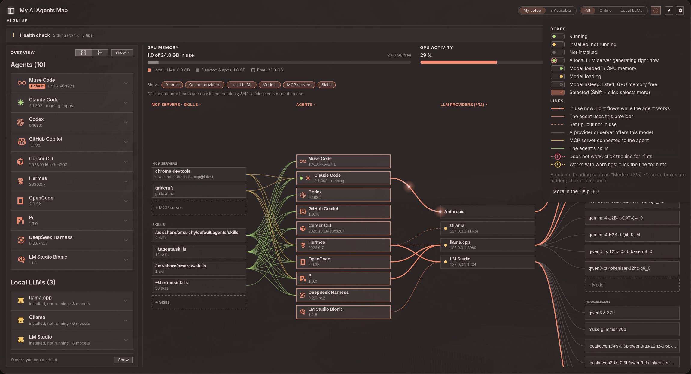
The main window: the map across the whole width, the GPU card above it, the ! for open problems in the header.
SKILL.md) and sometimes scripts that
teach an agent how to do a particular job.Every change to an agent's settings is shown first, line by line, before anything is written. The old file is kept as a backup, and the bar that appears after the change has Undo. The app itself never runs with administrator rights; only installing an agent that comes as a system package asks for your password, in a terminal you watch.
Choose one of these ways:
asterism with your AUR helper.Asterism-<version>-x86_64.AppImage from the
releases page at github.com/uBruckhaus/Asterism, make it executable and run it.
The AppImage uses your distribution's Python 3 with PyGObject, GTK 4 and libadwaita:
| Fedora | sudo dnf install python3-gobject gtk4 libadwaita |
|---|---|
| Ubuntu / Debian | sudo apt install python3-gi gir1.2-gtk-4.0 gir1.2-adw-1 |
| Arch | sudo pacman -S python-gobject gtk4 libadwaita |
bin/asterism in a checkout of the repository.The app brings its own icons, so no icon font is needed. To run agents inside the window, also
install VTE for GTK 4 (vte4).
Install the plugin from the Omarchy Plugin Marketplace, or from a terminal:
omarchy plugin add https://github.com/uBruckhaus/omarchy-ai-agents-map.git --enable
A robot button appears in the bar. Everything else it needs comes with a standard Omarchy
install. To run agents inside the window, install VTE: sudo pacman -S vte4.
On the first open, the app asks whether to add itself to the app launcher. Nothing is written there unless you say yes; you can change it later in Settings › In the app launcher.
The window is a normal app window: it can be tiled, floated, moved to another workspace and reached with Alt+Tab. Asterism A fresh Asterism opens on its welcome page: the agents and local LLMs installed on this computer are cards that are already ticked, and Switch on puts them on the map (see Setting up Asterism). Omarchy The bar button opens the window, brings it to the front, or hides it when it is already in front. Closing the window hides it; the program keeps running in the background so it opens again at once.
Note While an agent runs inside the window, closing it asks first: Stop and close (the agent's local LLM then stops too and frees the graphics card's memory) or Keep running.
Omarchy omarchy plugin remove ubruckhaus.ai-agents-map.
Asterism Remove the package or delete the AppImage.
Before removing, switch off Settings › Start local LLMs with their agents so the background watcher is removed too, and Settings › In the app launcher to delete the launcher entry. Changes you made with the app stay: agents' settings, MCP servers, skills and installed local LLMs. Uninstall a local LLM first (right-click › Uninstall…) if you want it gone. To delete the app's own state as well:
rm -rf ~/.config/omarchy/ai-agents-map ~/.config/asterism \
~/.local/state/ai-agents-map ~/.cache/ai-agents-map
The main window. The numbers match the list below.
The map shows only what is set up: installed agents and local LLMs, the MCP servers and skill folders agents use, and models. Everything else is done on Setup (the button in the header, beside Map), one card per item, in sections that fold away with a click on their bar:
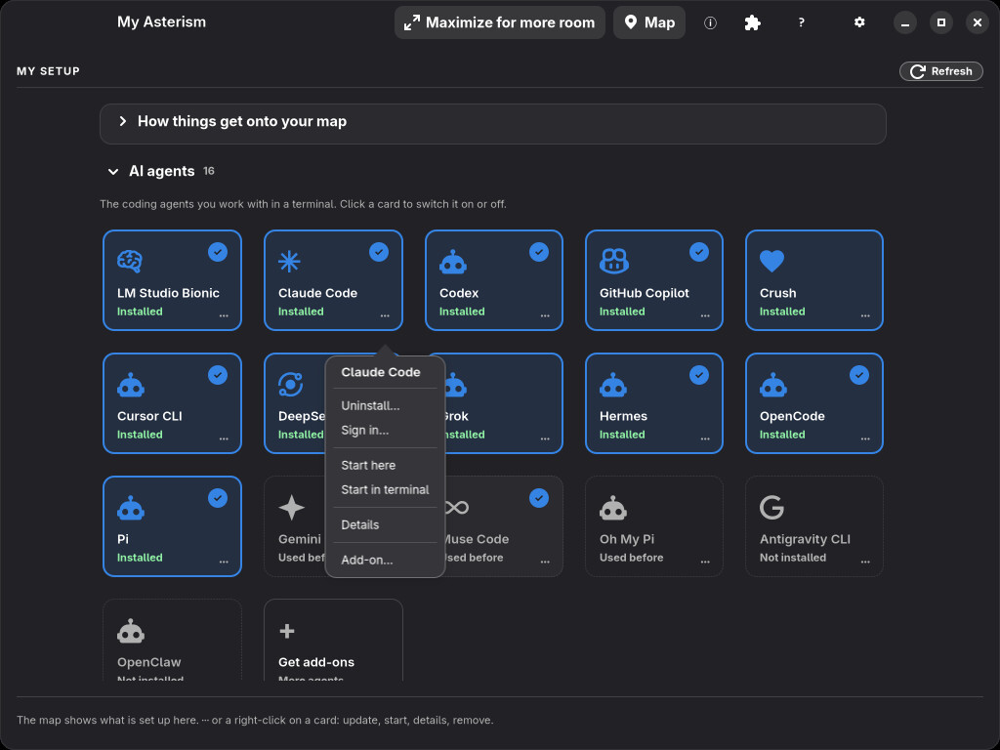
Setup: installed agents have a blue frame, switched-on ones a ✓, updates a yellow and problems a red badge; the menu of Claude Code.
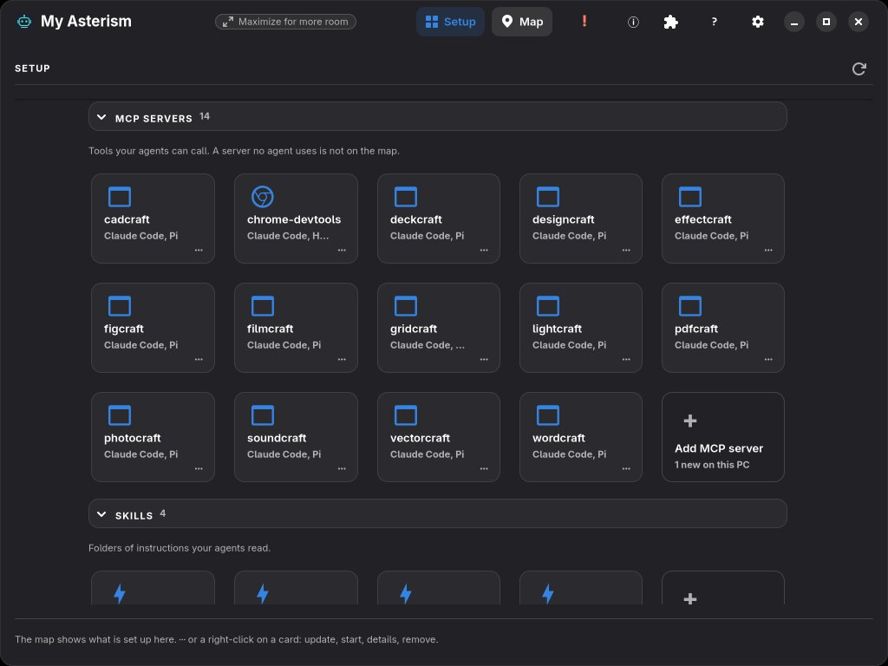
MCP servers and skills, each section with a card to add one.
There is nothing to hide: what you do not want on the map is switched off or removed here. When an install or a sign-in runs in a terminal in the window, Back (or × on its tab) returns to the page it was started from.
The map shows everything that is set up. The Show toggles below the GPU card leave whole categories out of it — for example all skills, or the local LLMs and their models — and are remembered.
In a narrow window (half the screen or less) the map chooses them itself, and a line beside the toggles says so: while an agent runs, agents and providers (who works through what); while none runs, providers and models. A toggle clicked there stays until that changes and is not remembered; the full-size window keeps your own choice.
Tip In a narrow window (below about 1300 pixels, such as half the screen) the map scrolls sideways, and Maximize for more room in the header gives it the whole screen (Settings › Too narrow for the map chooses what that button does).
When something needs fixing, a red ! appears among the header's symbols; its tooltip says how many, for example 2 open problems · 4 suggestions. A click opens Open problems: one line each — an agent not signed in, a local LLM without models, a connection that does not work, little free space for models — with a button to where it is fixed (the agent's or local LLM's details, the map with that line lit, Setup, Tidy up). The same problems show as a red ! on their cards on Setup. Tips and what works are on the cards and details pages themselves, and what the setup is good for is on Setup (What you can do with this). The check only reads; it never changes, starts or sends anything, and it shows nothing while the map is still empty.
Below the problems on the same page, Updates and suggestions lists what there is to say: new programs or skills found on this PC, what is on this PC but not on the map, and updates for installed agents and local LLMs, each with its button (Add MCP server…, Setup, Update). With only these and no problem, the header's ! shows in the accent colour. Updates are checked in the background when the window opens, at most every six hours. Nothing is installed by the check itself; an update starts only when you click Update.
Every coding agent has a card on Setup, installed ones with their version. Click an installed agent's card (Asterism or ⋯ › Details), or right-click its box on the map › Details. At the top, one line says whether the agent is ready (and if not, why) and whether it is running now or when it was last used. Below it, every category is a card that folds: click its heading to open or close it. They start folded, each with a one-line summary and badges; a category you open stays open on the next details pages.
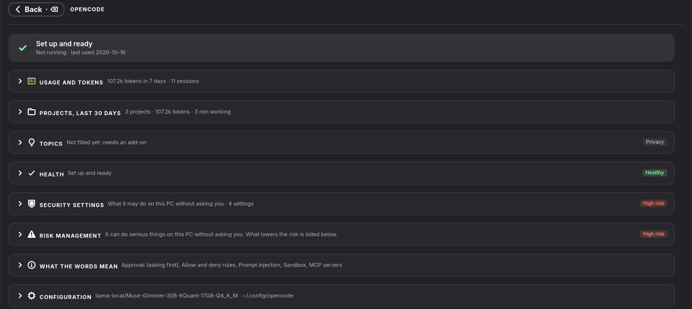
An agent's details: every category folded, with its summary and badges.
| Card | What it shows |
|---|---|
| Usage and tokens | Where the agent records it: today's and the last seven days' tokens and sessions, the plan, a chart of tokens per day, rate limits with reset times and tokens by model. |
| Projects, last 30 days | Per project folder: working time, sessions, tokens, subagent runs, lines changed and the API value. |
| Topics (Privacy) | What the sessions were about. It goes beyond numbers, so it is marked Privacy and filled only by an add-on (see below); the add-on names the card and its badge says how much it reads. |
| Health | Every setup check with a ✓, or what to do next: sign in, install or start its local LLM, download a model, add MCP servers or skills. |
| Security settings, Risk management, What the words mean | What the agent may do without asking you, and what lowers the risk (see Healthy & Security check). |
| Configuration | The agent's settings, MCP servers, skills and settings folder. |
Projects are shown for Claude Code, OpenCode and Hermes: working time, sessions, tokens, subagent runs, lines changed and what the tokens would cost at API prices. The numbers come from each agent's own session files or database; no text is read.
Asterism With the Insights add-on (see Add-ons) the Topics card shows first which topics took the most tokens in the last 30 days (Most tokens: sessions with the same title are one topic, each with its share of all tokens), then the titles the agent gave its sessions itself, per project (By project), and offers Summarize with Claude… (when Claude Code is installed). Its tokens come from the agent's own session files without cache reads, so they can be far lower than in Usage and tokens, which may count cache reads. Before anything is sent, you see exactly what will be sent: the titles and numbers, never the conversations.
vte4).When agents have terminals in the window, a tab line above the map shows one tab per terminal with a dot for working, running or ended. Click a tab to show that terminal; × closes an ended one.
An agent with an open instance anywhere on the computer gets a green dot and running, and the model box it runs with says in use · <agent>.
Chess and other tests with your agents are in an app of their own: AI Playground. It lets an agent play chess against you (or two agents against each other), compares speed and cost, judges two answers blind, tests pictures and video frames, and asks your local LLMs. It uses the agents that are set up here.
When AI Playground is installed (the Omarchy plugin, or the ai-playground app on other desktops), its button, a gamepad, appears in the header. Select an agent on the map first, and AI Playground opens with that agent chosen. On Omarchy the ⓘ Information page tells more about it and links to its page in the Omarchy Plugin Marketplace.
Sign in… in an agent's menu (on Setup or on the map) shows what the agent needs and its own ways to sign in:
claude auth login or codex login). Your password or browser
login stays between you and the agent; the app never sees it. Where the agent asks for it,
the terminal says what to type (Pi and Copilot: /login).~/.gemini/.env, readable only by you). It never goes into a command line,
a log or the app's settings, and the app does not keep it. Claude Code's API billing is its own
Anthropic Console sign-in, so no key passes through the app.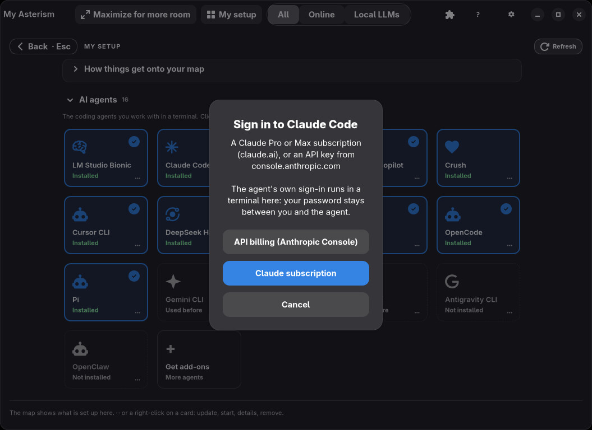
Signing in to Claude Code: a subscription or API billing, both with Claude Code's own sign-in.
Afterwards the map shows the agent's online provider and its models.
When a newer version of an installed agent is out, its card on Setup gets a yellow ↑ version,
and Updates and suggestions (the header's !) names it. Update runs
the update the same way the agent was installed — for example mise upgrade <tool>
or claude update — in a terminal window of its own, so you can follow it.
Three agents can be installed, updated and uninstalled from the map (right-click the agent › Install…):
dsh, developer preview), from npm. It can use local LLMs.agy, Google), from Google's release manifest; the
download is checked against its SHA-512.When an agent turns up that the app does not know yet, it asks an installed agent (Claude Code, else Codex) once to find out on the web where that agent keeps its skills and MCP servers. The answer is checked before use, and nothing in it is ever run. Settings › Look up new agents switches this off.
A local LLM runtime runs language models on your own graphics card, so prompts never leave the computer. The app installs, starts and stops them for you.
Right-click a grey (not installed) local LLM on the map › Install…. You choose the program folder, the model folder (the one your other local LLMs use is suggested) and whether it starts at login. It is installed for your user only, with a user service, so no password is needed. Every download must match the SHA-256 checksum its release publishes before it is unpacked or run.
| Runtime | Notes |
|---|---|
| Ollama | The official release (with ROCm for AMD cards). |
| llama.cpp | The build of your choice (Vulkan, ROCm, CUDA, CPU), run as a model router: every GGUF in the model folder, one loaded at a time. |
| LM Studio | Not installed from here (no published checksum); get it from lmstudio.ai. Shown and managed once installed. |
| vLLM | For NVIDIA cards, in its own Python environment. |
| Jan | Its AppImage, unpacked, with Jan's engine as a background service for agents. |
| KoboldCpp | The official single-file build, run as a model router. |
Installed this way, a local LLM also offers Update… (the previous version is kept as a fallback), Model folder… and Uninstall…, which removes the program, command, service and settings but never the models. Local LLMs you installed yourself are shown, but never changed.
Connect an agent to a local LLM once, then just start the agent — even with the app closed or after a reboot. Its local LLM starts with it, and when the last agent using it closes, the LLM stops about five seconds later, so its graphics memory is free again.
A small background service, ai-agents-map-providers.service, does this. It is set up
with the first connection to a local LLM and removed when the last one goes, or when you switch off
Settings › Start local LLMs with their agents.
Note KoboldCpp takes a few seconds to start, longer than some agents wait. So it starts at login, and when the last agent closes only its model is unloaded.
Click a local LLM's card on Setup, or right-click its box on the map › Details. Below the tiles (models, agents, address) the same folding cards as for agents: Usage and tokens — what your agents sent through it in the last days, per agent and model, taken from the agents' own session numbers and matched by model name — then Health, Risk management, What the words mean and Configuration.
In the GPU card above the map, GPU memory shows how much is in use, split into local LLMs, desktop and apps, and free; GPU activity shows load, temperature and power. Each local LLM's box shows how much memory it holds, and loaded models get a green dot.
Right-click a local LLM for Start, Stop, start at login, and Free GPU memory: its models are unloaded, it keeps running and loads one again when asked.
A local LLM that holds GPU memory gets a red stop button on its box. It asks first: Free GPU memory unloads its models; Stop ends it. For LM Studio the button is Stop server: only its server ends, and the app stays open with its models loaded. A model that a local LLM has loaded, but no agent uses, is joined to it by a solid light line.
LM Studio can be open without its server. Its box then says server off with a yellow dot, agents cannot reach it, and its menu offers Start server (lms server start).
Local LLMs are not only used by agents. A plugin such as Video Trans, a chat app or your own script can send requests to them too. The app notices this and shows it:
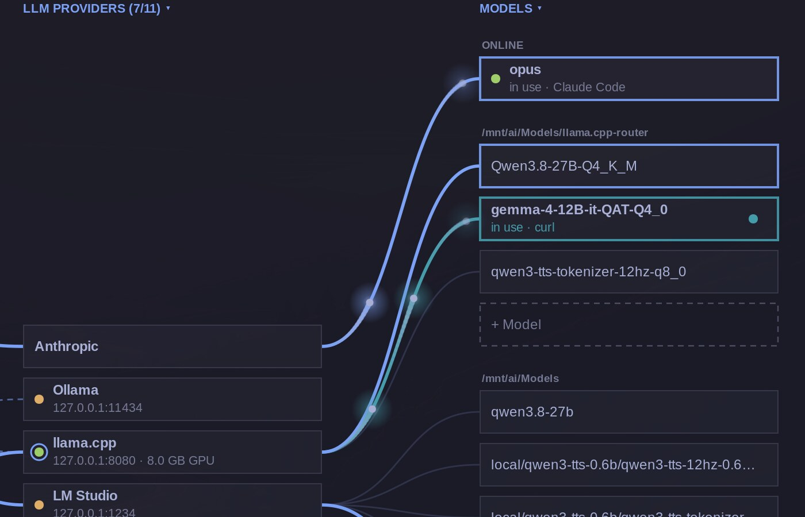
A program that is not on the map (here curl) generating with llama.cpp: the cyan line and box (Tokyo Night theme). Claude Code's own path to opus stays in the accent colour.
The app looks at which of your own programs have a connection open to the local LLM. It never reads what they send. A plugin is named by its own name, an agent by its name, anything else by its program name. The app itself and LLM Monitor, which only read the status, are not counted.
Note The light shows only while the program is generating, and fades about ten seconds after its last request. A program that is open but idle — Video Trans with no speech to translate — shows nothing. A program stays listed in the menu for half a minute after its last request.
Right-click an installed local LLM › Models…, or click Add model on Setup. The page has a list on the left and the chosen model on the right, in three tabs.
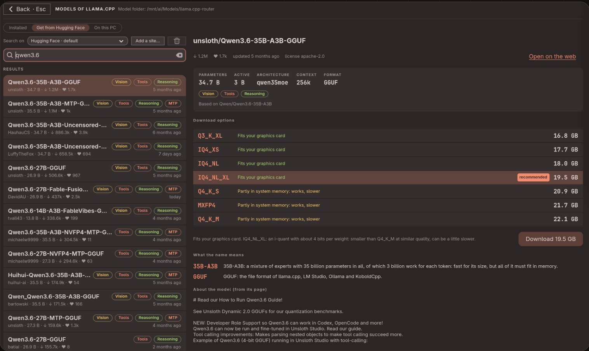
Get from Hugging Face: what a model can do, and which size fits your graphics card.
Browse the trending GGUF chat models or search. Each result shows its author, size, downloads, likes, age and what it can do: Vision, Tools, Reasoning, MTP. The model's page shows its parameters, architecture, context, license and model card. What the name means explains the parts of the name, such as 35B-A3B or Q4_K_M.
Download options lists every size with how it fits: in the graphics card, partly in system memory (works, but slower), or likely too large. The best fit is chosen for you; Download gets it into the model folder.
Downloads run in the background and show in a strip at the top of the main page. A broken connection is retried and the download resumes. If the app was closed during a download, it is listed as interrupted, with Continue or Discard.
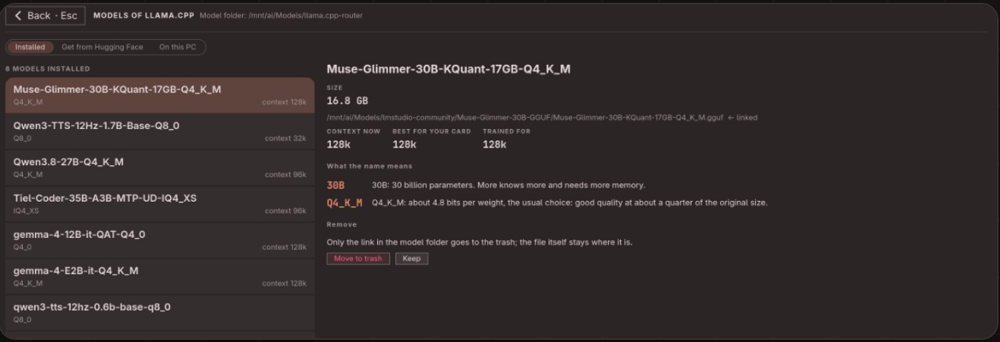
Installed: context now, best for your card and trained for; what the name means; Remove.
Each model shows its size, file and context — now, best for your card and trained for. Remove asks first and moves the files to the trash, where you can restore them. A model that is only a link loses only the link.
The context is how much text the model can keep in mind at once. The app calculates the largest context that fits your graphics card from the model file itself. Set context writes it to the local LLM's settings, with a backup and Undo. Agents need a fairly large context; when you connect an agent to an LM Studio model without a context set, the best one is set in the same step.
Lists GGUF files the local LLM does not read yet — in its models folder, the other local LLMs'
folders, ~/Downloads and ~/Models. Add makes one its model without a
second copy (a link), except for Ollama, which imports its own copy.
Right-click a model of llama.cpp, KoboldCpp or LM Studio › Move to…, or drag the model box onto another local LLM's folder. First you see how much moves and which agent uses the model. Undo moves the files back. Delete… asks first and moves the files to the trash.
Settings › Models folder sets one folder for every local LLM's models.
Reorganize models… previews how the files would be sorted
(<folder>/<publisher>/<model>/), and nothing changes until you press
Reorganize. With Keep old paths working (on by default), a link stays at every old
place. Undo the last reorganize puts everything back.
Caution Moving models to another disk copies them first and removes the originals only when the copy is complete. Make sure the target disk has enough free space; the app refuses the move if it has not.
Press on a box on the map and drag to another to connect them. Every change shows exactly which lines of which file change before anything is written, keeps a backup, and can be undone from the bar that follows.
Drag from an agent to a local LLM, or back. Choose the model and whether the agent uses it right away. To change a connection, click the line to select it, then drag its end to another local LLM — or onto empty space to remove it. With an agent selected, clicking a model of a connected local LLM makes that model the agent's model.
Supported agents: Hermes, Pi, OpenCode and DeepSeek Harness.
Drag from an agent to an MCP server. The server's settings are copied into that agent's own format. Supported: Claude Code, Codex, Copilot, Crush, Cursor, Gemini, Grok, Hermes, Muse, Oh My Pi, OpenClaw, OpenCode and Pi. Settings files that may hold keys are always written so that only you can read them.
Drag from an agent to a skill folder. Pi and Hermes get the folder in their settings; every
other agent gets one link per skill in its own skills folder. A folder an agent reads by itself
(most read ~/.agents/skills) cannot be taken away from just that agent.
Right after a connection is written, the app checks whether it will work: whether a local LLM is installed and offers the model, whether an MCP server answers, whether the skill links are intact. A connection that fails stays on the map as a dotted red line with a !; one with only warnings is dotted yellow. Click the line or its ! for hints:
MCP servers give agents extra tools. + MCP server on the map or under the cards opens the page for adding one: a list on the left, the chosen server's page on the right.
| Tab | Contents |
|---|---|
| Recommended | The MCP project's reference servers (Filesystem, Fetch, Git, Memory, Sequential Thinking, Time, Everything) and official servers of well-known makers (GitHub, Playwright, Chrome DevTools, Brave Search, Context7), grouped by purpose and pinned to their newest version. |
| MCP registry | A search of the official MCP registry. Each result names its publisher as the registry checked it. The search can take ten seconds or more. |
| On this PC | Programs on this computer that offer an MCP server, found by reading their files — nothing is started. AppImages are only looked into when you click Look inside…. |
| By hand | A command line, or a web address with headers. |
The server's page says who made it and how well that is checked, what it does (with things to
ask an agent once it has it), how it runs — a program through npx, uvx or
Docker, or a web service — and what it needs, such as a folder or an API key with a link to where
you get one. Below it, Set it up:
Note Secret values such as API keys are passed in the environment or in headers, never on a command line where other users of the computer could read them. A server that would need a secret on its command line has to be set up by hand.
ⓘ Details on an MCP server card shows each agent's settings file, the command or address, and on request the server's tools; values of keys are never shown. Remove takes the server from every agent. Servers stay in the list when no agent uses them any more, so a line can connect them again.
When a newer version of an app that provides an MCP server turns up in
~/Applications, a note names it. Update… unpacks the new version, points every
agent at it and keeps the old one as a backup for seven days. Check for updates (in
On this PC) does it for every such app at once after your click: it looks inside the new
versions, offers all updates in one preview with one backup and one Undo, and then tests each
updated server; a note names any that does not answer.
A skill is a folder with instructions that teach an agent a particular job. + Skills opens a page laid out like the MCP page.
~/.agents/skills.Caution Skills can contain scripts that an agent may run later. The page shows the repository and lists the scripts before anything is fetched — check them.
Each skill folder card shows its skills and the agents that read it. A folder that is shared through links shows up once, where it really lives. ⓘ Details lists every skill with its description and how each agent gets the folder.
The gear (Ctrl+,) opens the settings. Backspace or Esc goes back.
| Setting | What it does |
|---|---|
| Language | The system language, or English, Deutsch, Français, Español, Italiano, Português, Nederlands, Polski. |
| Look Omarchy | The Omarchy theme colours, or GNOME's Adwaita look with the system's light/dark mode and accent colour. |
| Map animations | Light runs along the lines on the map: Agents and other programs (a working agent's line, and a local LLM's line to a model another program uses), Only my agents, or Off. A small animated map under the setting shows what each choice moves. |
| Terminal tabs above the map | One tab per agent terminal in the window. |
| Corners | Like windows, rounded or square. |
| Look up new agents | Ask an installed agent where an unknown agent keeps its settings. |
| Start local LLMs with their agents | The background watcher described in Starting and stopping with agents. |
| Too narrow for the map Omarchy | What Maximize for more room does: move to a free workspace, maximize in place, or show no hint. |
| In the app launcher | The launcher entry; off removes it. |
| Agents start in | The folder agents start in. |
| Models folder | One folder for all models, with Reorganize models…. |
| Add-ons Asterism | Look for add-ons online, the Add-ons page, and Setup. |
| About | The version, the author and the license; Website opens the project on GitHub and Report an Issue its issue list. |
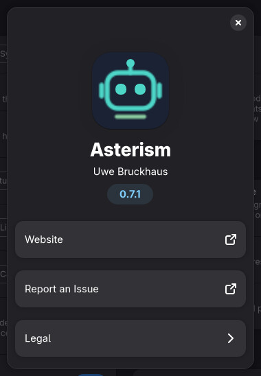
Settings › About.
? (F1) opens Help: Open user manual opens this manual (the copy that came with your version) in your PDF viewer; Disk space (below); an animation of setting up by drawing; and LLM Monitor, a companion bar plugin that shows what a local LLM is doing (a small animation of its bar item and panel). Both animations, and the one in Settings › Too narrow for the map, are drawn in your theme's colours and follow a theme change at once. The ⓘ legend in the header explains every dot, line and mark of the map.
Disk space: agents, local LLMs and models shows how much room your AI setup takes and where it is. It is measured in the background each time Help opens (again after ten minutes, or with Measure again), and only read — nothing is deleted from here. Its heading always shows the totals in one line (Agents · Local LLMs · Models · In all); click it to fold the section away. Disks, Agents, Local LLMs and Models folders inside start folded, each showing its sum and largest entries; click one to open it.
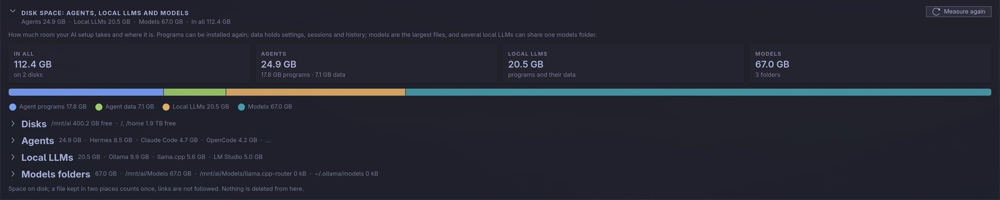
The totals, the AI share of the whole disk space, and the folded sections with their sums.
mise prune, which removes the unused ones. A models folder says which local
LLMs use it, or that it holds only links to models in another folder.Tip Programs can be installed again and models downloaded again; the agents' data holds your sessions and settings. When space runs out, look at old program versions and at models you no longer use first.
Sizes are space on disk: a file kept in two places counts once, and links are not followed.
A coding agent reads and writes files and runs commands on your computer. How much it may do without asking you is set in the agent's own settings, with different words in every agent. The Healthy & Security check brings this together: on the details page of every agent and of every local LLM, four cards show whether it works, what it may do, what that means in plain words, and what lowers the risk.
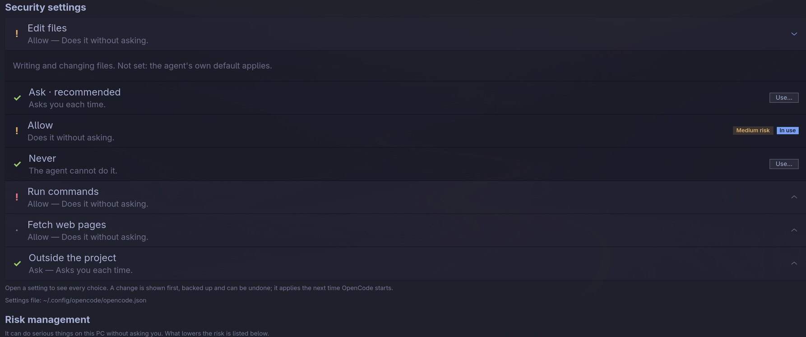
OpenCode's Security settings, with Run commands opened, and the start of its Risk management.
The badges on the folded cards sum it up: Healthy, Needs a look or Not set up on Health, and Low risk, Medium risk or High risk on Security settings and Risk management. Open a card for its details:
| Card | What it shows |
|---|---|
| Health | Every setup check with a ✓, or what to do next: installed, signed in, its model and local LLM, MCP servers and skills. |
| Security settings | The agent's settings that decide what it may do on its own, each with its value now and one sentence on what that means. The mark in front tells the risk: ✓ safe, · low, a yellow ! medium, a red ! high. |
| Risk management | What the settings mean together, most serious first, each with why it matters and → what lowers it. Protections that are in place are listed with a ✓. |
| What the words mean | Sandbox, approval, allow and deny rules and the other words the cards use, explained (see The words explained). |
Allow and deny rules and trusted folders the agent has (for example Claude Code's
permissions.allow list) are listed below the settings, one rule per line.
Note Only the one key changes; comments and everything else in the file stay as they are. A setting that needs more than a line in a file — such as Hermes running its commands in Docker — is shown and explained, with where to change it, but not changed from here.
| Agent | Settings shown and changeable | File |
|---|---|---|
| Claude Code | Permission mode (Ask first, Plan only, Only what is allowed, Edit without asking, Automatic review, Bypass all checks), sandbox for commands, block bypass mode; allow / ask / deny rules | ~/.claude/settings.json |
| Codex | When Codex asks, sandbox (read only, project folder, none), network in the sandbox; trusted folders | ~/.codex/config.toml |
| GitHub Copilot | Permission mode (Ask first, Automatic review, Allow everything); trusted folders, sites without asking | ~/.copilot/settings.json |
| Cursor CLI | Approval, sandbox, network in the sandbox, web search without asking; allow / deny rules | ~/.config/cursor/cli-config.json |
| Hermes | Dangerous commands (always ask, automatic review, never ask), hide secrets; where commands run (shown only) | ~/.hermes/config.yaml |
| OpenCode | Ask, allow or never for editing files, running commands, fetching web pages and working outside the project | ~/.config/opencode/opencode.json |
| Pi | Its tools: read, write and run commands, or read only. Pi never asks by design, so its tools are its permissions. | ~/.pi/agent/settings.json |
For other agents the card shows their health and their MCP servers, and says where to look in the
agent's own settings. For a local LLM it shows who can reach it: only this PC
(127.0.0.1, as it should be) or every device on your network.
The risk level is the most serious point the card finds:
Good habits, whatever the settings:
git status) with an allow rule instead of allowing the whole shell.127.0.0.1: their servers have no password.Caution An automatic review (Claude Code's auto mode, Copilot's assisted, Cursor's auto-review, Hermes's smart) is a second AI judging each step. It saves questions, but it is a judgement, not a wall.
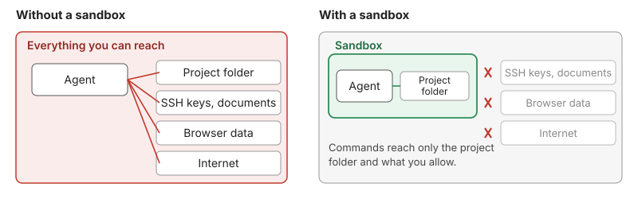
What a sandbox changes: commands reach only the project folder and what you allow.
0.0.0.0 can be reached from every device on your network.Everything Asterism understands about an agent or an LLM provider is an adapter: how it is found and installed, its sessions, security settings, MCP servers and skills. In Asterism every adapter is an add-on: the packages bring all of them, signed and switched off, and you switch on the ones you use. Add-ons also bring new agents, new providers, and features beyond the numbers, such as Insights (session topics and a summary by Claude). The AI Agents Map plugin has the adapters built in and no add-ons.
A new Asterism opens on its welcome page. Every agent and local LLM Asterism knows is a card with its own icon, in three groups: AI agents, Local LLMs and Online providers (the names of Anthropic, OpenAI and the others on the map). Each card says whether the program is here:
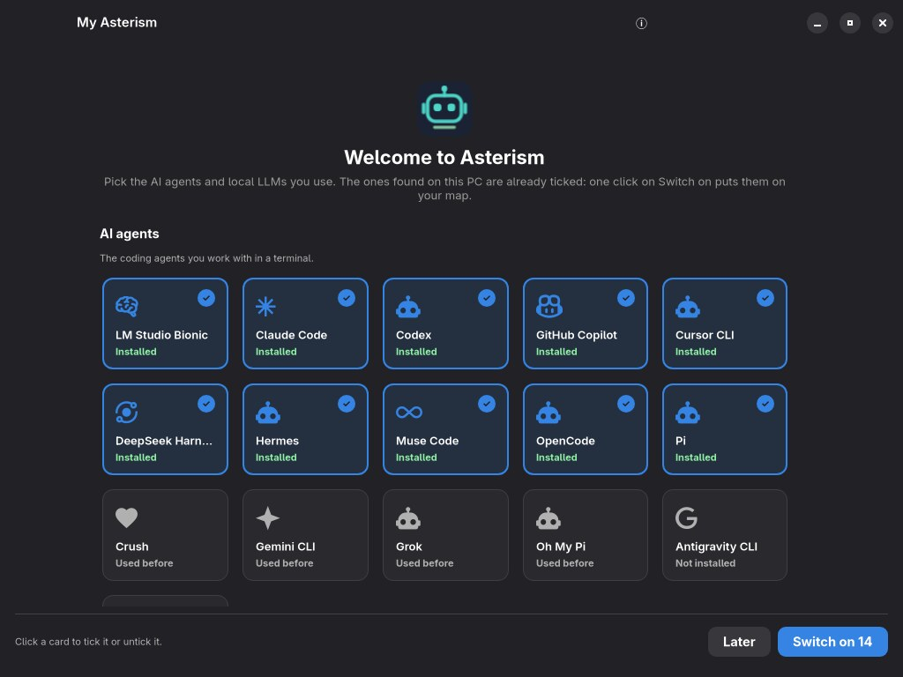
The welcome page: found programs come first and are ticked.
Click a card (or press Space on it) to tick or untick it; a ticked card has a blue frame and a check mark. Switch on (with the number of ticked cards) loads them and shows the map; when you ticked programs that are not installed, Setup opens: ⋯ on their cards › Install…. Later starts with an empty map. As long as nothing is switched on, Asterism opens on the welcome page again at every start. Afterwards the same cards are on Setup (the header button), where agents and providers are switched on and off at any time.
Open it with the puzzle button in the header, from Settings › Add-ons, or from any "add-on available" hint. It shows, as cards:
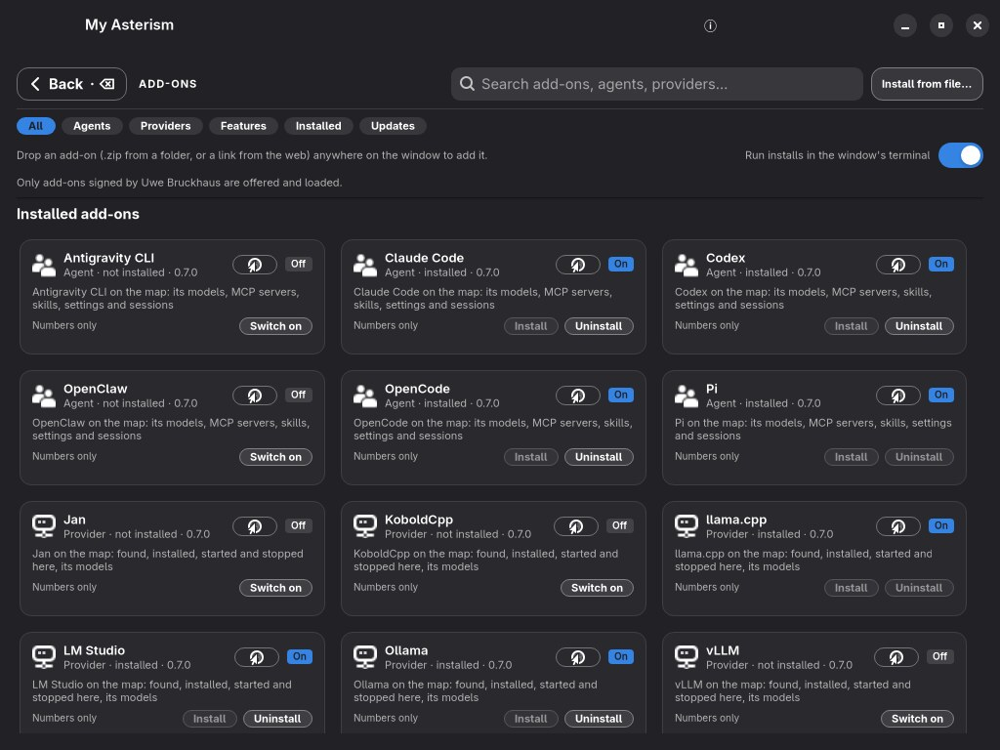
Installed add-ons: on or off, with Install and Uninstall for the program.
The card of an agent or local LLM that is switched on has Install and Uninstall for the program itself (the one that does not apply is greyed out), and every card with a homepage has a globe button that opens it in your browser.
Search finds names, descriptions and what an add-on reads; the chips above narrow the list to agents, providers, features, the installed ones or those with an update. Click a card for its details: what it reads, what it sends, what it may do, and its privacy level.
Install (or Get add-on) first shows what the add-on reads, sends and may do; only after your OK is it downloaded, checked and switched on. Switch off and Switch on work at once, without a restart: its agents, providers, sections and cards appear or disappear everywhere. Update replaces it with the newer version from the catalog, after the new one was checked; Remove moves it to the trash. Install from file… takes an add-on zip you downloaded yourself; the same checks apply.
Only from the author. Asterism loads only add-ons signed by Uwe
Bruckhaus (key fingerprint SHA256:e5cC634Ke3Our5LAeSc88qs22NKZEHTncBW5Ig3amWQ). Before
anything of an add-on runs, the signature is checked with OpenSSH's ssh-keygen, every
file is compared with its SHA-256, and no file may have been added. A download must also match the
SHA-256 in the signed catalog.
| Level | What the add-on may read or send |
|---|---|
| Numbers only | Counts, times, tokens, lines changed, cost — what Asterism shows without add-ons. |
| Session titles | The titles an agent gave its sessions itself (never the conversations). |
| Titles and a summary by Claude | Those titles and numbers, sent to your own Claude Code — only on a click, after a preview of exactly what is sent. |
An add-on can never do more than its level allows. Adding an agent or a provider, or installing a program, are separate permissions that the card names.
| Kind | What it brings |
|---|---|
| Agent | One coding agent: where it keeps its settings, sessions, MCP servers and skills, how it is installed and how it signs in. Asterism builds everything else from that — the card on Setup, its box on the map, Usage and tokens, Projects, Health and Security. |
| Provider | A local LLM program, or the online providers: how it is found and installed, and how agents reach it. Asterism builds its card, its box on the map and its details page — including Usage and tokens: what your agents sent through it, taken from their own session numbers. |
| Extension | More facts for an agent or a provider another add-on brings, without replacing it — for example its plan and limits, or a card on its details page. It only fills what the agent's add-on leaves empty; the add-on's page says what it adds to and anything it adds that is not used. |
| Feature | Something across agents, such as Insights (the Topics card). |
An add-on's section on an agent's or a local LLM's details page joins the card it is about: Usage and tokens, Health, Topics (agents only), or a card of its own with its name.
An agent add-on describes its agent as facts (a file named agent.toml); most bring no
code at all, and the add-on's page says so: Brings no code, or, for the few agents that need
some (their own session database, say), Facts about the agent, and a little code for what facts
cannot say.
When you install an agent Asterism does not know yet, it looks in the catalog (Settings › Look for add-ons online, on by default: the list is read from GitHub every few hours, nothing is sent but the request). If an add-on knows that agent, Updates and suggestions (the header's !) says so ("Kilo Code is on this PC but not on the map") and a card under Suggested for this PC; one click installs it. If no add-on exists yet, the agent's details say so, with a link to ask for one.
sudo in a terminal you watch, after showing you the command.The README in each repository lists in full what is read, started and written.
| Problem | What to do |
|---|---|
| The map is cramped or cut off. | The window is narrower than about 1300 pixels. Click Maximize for more room in the header, or zoom out (Ctrl+−). |
| A box I expect is not on the map. | The map shows only what is set up: check Setup (an add-on switched off, an MCP server no agent uses) and the Show toggles. |
| Start here is missing or does nothing. | Install VTE for GTK 4 (vte4), or use Start in terminal. |
| A line is dotted red. | Click it for hints, fix what it says, then Test again. See When a connection fails. |
| The local LLM does not start with the agent. | Check Settings › Start local LLMs with their agents, and that the agent is connected on the map. systemctl --user status ai-agents-map-providers shows the watcher. |
| The coloured light from a local LLM to its model does not show. | It shows only while a program that is not on the map is generating with that LLM, and fades about ten seconds after its last request. Check the map is visible (a wide window) and that the program is actually sending something. |
| The agent answers badly or cuts off with a local model. | The context may be too small. Open the model under Models… › Installed and use Set context with the best value for your card. |
| A download stopped. | It resumes by itself after a broken connection. After a restart, use Continue in the strip at the top. |
| I want to undo a change from earlier. | Backups are kept in ~/.local/state/ai-agents-map/backups/. |
| F1 | Help |
|---|---|
| Ctrl+, | Settings |
| F5 | Refresh (the map and Setup) |
| Ctrl++ / Ctrl+− / Ctrl+0 | Zoom the map in, out, back to 100 % |
| Ctrl+scroll | Zoom the map |
| Shift+click | Add to or remove from the selection |
| Esc | Clear the selection; go back from a page |
| Backspace | Go back from a page |
| Path | Contents |
|---|---|
~/.config/asterism/ Asterism~/.config/omarchy/ai-agents-map/ Omarchy | Settings, the MCP server list, looked-up agents, failed connections. |
~/.local/state/ai-agents-map/backups/ | Backups of every file the app changed. |
~/.local/state/ai-agents-map/jobs.json | Interrupted downloads and installs. |
~/.local/state/ai-agents-map/reorganize.json | The journal of the last reorganize, for Undo. |
~/.cache/ai-agents-map/ | Scan results, tool lists, update checks. |
~/.config/systemd/user/ai-agents-map-providers.service | The watcher that starts local LLMs with their agents. |